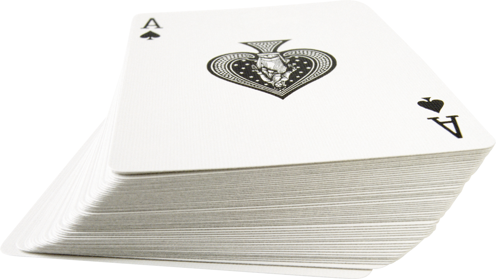

magic
大学から趣味として初めて、時たま友達に見せる程度。お小遣い稼ぎとして将来副業でくるかなぁ。(←この感じだとムリ。) コインやトランプが中心。
お笑い
大学に入ってからは2ヵ月に一回程度で1人でお笑いライブに行っていた。バラエティーとかも好きだが、やっぱりネタが好き。漫才派です。
おすすめ芸人さんのYouTubeチャンネル
ぼちぼち読書

大学3年までで完読できた本が'解決ゾロリ'だけだったが、メモの魔力を呼んでから読書に少し興味を持ち始めてきた。一週間に一冊程度だが継続的に読めてきた。
おすすめの本を紹介
人気なアーティストでは星野源やsumika、髭団が好きだが、人気が出てライブが当たらなくなってい来たので最近はライブには行っていない。最近は若手バンドの曲をいろいろ聞いている。 ドラムは下のご近所さんから苦情が来たのでできていないが。最近、おばあちゃんからウクレレをもらったので挑戦してみようかと。。
勉強前に"手洗い＋第五人格というゲームを1戦だけ"やると抵抗なく課題に取りかかれる、マイルーチン。気付いたらアジア内で62位にまで上がっていた。